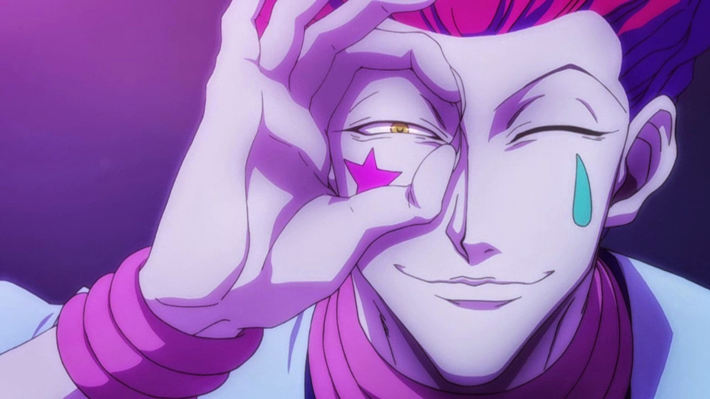

Hisoka
Hisoka is a cunning and bloodthirsty fighter known for his unpredictable nature and love for combat. His abilities, Bungee Gum and Texture Surprise, make him a formidable opponent, capable of adapting to various situations. Hisoka's battles are always a spectacle, showcasing his agility, intelligence, and sheer power. One of his most notable fights is against Chrollo Lucilfer, the leader of the Phantom Troupe, where both fighters demonstrate their strategic brilliance and combat prowess. Hisoka's obsession with strong opponents drives him to constantly seek out new challenges, making him one of the most intriguing characters in Hunter x Hunter.
